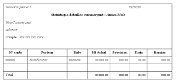

Rédaction des documents d’analyse avec U.M.L
Date de publication : 12/04/2006
8. Description d’une édition
8.1. Préambule
8.2. Réunion : Statistiques fin de mois
8.3. Statistique : Comptabilité commerçant
8.4. Epilogue
8. Description d’une édition
8.1. Préambule
Dans le cadre du cas d’utilisation "Fin demois" le groupement demande une statistique permettant de vérifier les mouvements comptables. Une réunion permet de préciser les besoins ....
8.2. Réunion : Statistiques fin de mois
La réunion permet d’aborder les statistiques.
En fait les statistiques nécessaires à la comptabilité seront suffisantes. Le site Web est là pour les autres besoins.
Nous définissons donc :
- Les statistiques détaillées commerçant : Mouvement par mouvement. Elles justifieront la comptabilité commerçant.
- Les statistiques cumulées par commerçant : Elles sont destinées au groupement. Elles permettront de justifier la comptabilité du groupement et d’effectuer la validation des virements-prélèvements.
8.3. Statistique : Comptabilité commerçant
Vous êtes maintenant rodés à la mise en forme d’un cas d’utilisation. Passons directement à la description de la statistique.
UML n’offre pas d’aide particulière. Restez classique ....
Objet
Représenter les mouvements et remises du mois.
Déclenchement
- Automatique en fin de mois
Paramètres en entrée
Tri
- Par commerçant
- Par date de mouvement
Sélection
- Mouvement du mois en paramètres.
Dessin
Statistique commercant
Description
| Zone |
Description |
| Montant remise |
Montant de la remise accordée au client si le mouvement donne lieu à remboursement. |
| ... |
|
Totaux
Par commerçant
- Montant achat
- Montant provision
- Montant frais
- Montant remise
Total général
- Montant achat
- Montant provision
- Montant frais
- Montant remise
Rupture de Page
Algorithme
L’algorithme n’est pas très loin de celui de la comptabilité ...
Diagramme de classe
....
8.4. Epilogue
Il vous reste à décrire de la même manière l’ensemble des statistiques pour terminer le cas d’utilisation "Fin de mois".
Ce document est soumis à la licence GNU FDL traduit en français ici.
Permission vous est donnée de distribuer, modifier des copies de cette page tant que cette note apparaît clairement.
|


{kind=link}